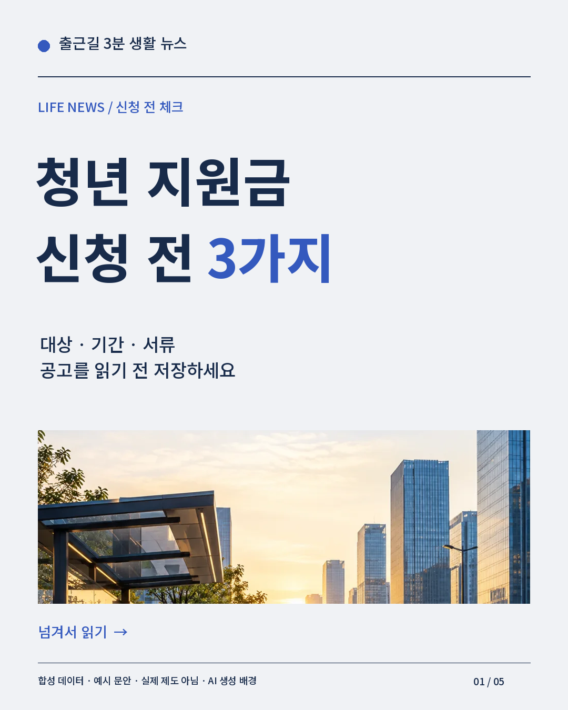

PATH 01 / 완전 초보
오늘 첫 게시까지.
(실습) 0~7을 따라 계정·설치·문안·카드·릴스·검수·앱 게시를 잇습니다. 원리가 궁금하면 (이론)으로 돌아오세요.
(실습) 시작 전에 →A SMALL STUDIO, A STEADY PRACTICE
AI로 뉴스카드와 릴스를 만들고,
검수하고, 운영하는 법을 배우는 책.
첫걸음은 도구 설치보다 작은 계획입니다.
개 (이론) 장 · 개 (실습) · 개 그림·계산·연습 (한 달 요약 포함)
사전 지식 필요 없음 · 읽고, 만져 보고, 직접 남기는 교과서
처음인 사람을 위해코드를 몰라도, 전체 흐름부터 차근차근.
읽은 만큼 남기는 결과물기획 메모에서 카드·릴스·운영 계획까지.
숫자보다 먼저 가정을 읽기계산 모형과 확인된 사실을 구별합니다.
지금 품고 있는 질문에서 출발하세요.
PATH 01 / 완전 초보
(실습) 0~7을 따라 계정·설치·문안·카드·릴스·검수·앱 게시를 잇습니다. 원리가 궁금하면 (이론)으로 돌아오세요.
(실습) 시작 전에 →PATH 02 / 코딩 가능
(실습) 6에서 검수·승인, 8에서 Instagram Login API 설정을 이어갑니다. (이론) 9~10장에서 경계와 실패 처리를 읽으세요.
(실습) 8 API 게시 →PATH 03 / 이미 계정 운영 중
11장 지표와 12장 안전 점검을 먼저 확인하고, 3장의 수익 경로·13장의 목표 거래 수 → 14장 시간 계획을 내 시간에 맞춥니다.
11장 처음 볼 숫자 →스타터 키트로 실제 만든 파일
가상의 합성 피드로 만든 교육용 샘플입니다. 실제 뉴스·성과가 아닙니다. 유료 API 없이 오프라인 모드로 생성했습니다.

기획부터 제작·검수·운영, 그리고 실험실과 용어집까지.
이 책을 함께 걷는 사람들
마케팅팀 직원 하린은 ‘AI·테크 뉴스 한 장 요약’ 계정을 구상합니다. 전 잡지 편집장 정 선배는 첫 질문을 건넵니다. “무엇을 만들까보다, 누구의 질문을 풀어 줄까부터 적어 보자.”
두 인물과 계정은 가상입니다. 이들의 목표와 시간 배분은 학습용 설정이며 실제 성과 사례가 아닙니다.